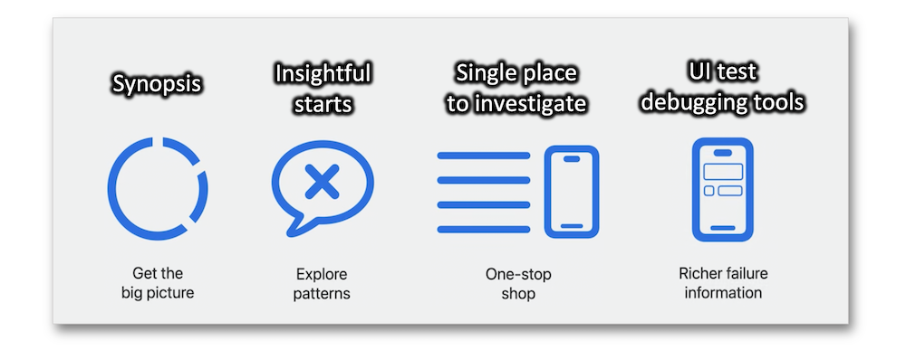
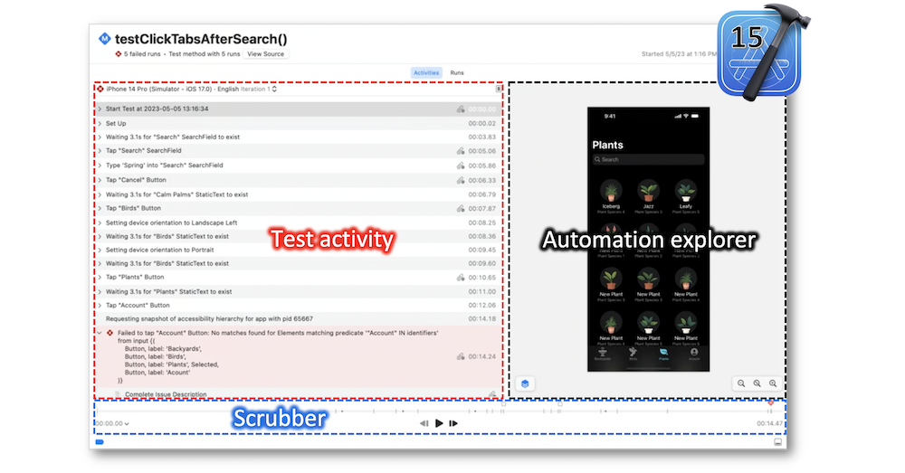

WWDC 2023: Debugging and testing
Find hereafter a detailed summary of two WWDC videos that belong to a taxonomy of some WWDC footages.
The original videos are available on the Apple official website (session 10175, session 10226).
"Discover the debug console in Xcode 15 and learn how you can improve your diagnostic experience through logging. Explore how you can navigate your logs easily and efficiently using advanced filtering and improved visualization. We'll also show you how to use the dwim-print command to evaluate expressions in your code while debugging."
"Discover how you can find, debug, and fix test failures faster with the test report in Xcode and Xcode Cloud. Learn how Xcode identifies failure patterns to help you find the right place to start investigating. We'll also show you how to use the UI automation explorer and video recordings to understand the events that led up to your UI test failure."
Hereafter, the underlined elements lead directly to the playback of the WWDC video at the appropriate moment.
Debugging #
Console #
Xcode 15 provides a brand new Debug Console with many features to be pointed out hereunder.
Metadata #
The metadata can be customized through an options button and its content is cleverly placed below each log.
Log preview #
Besides the different options to be displayed below each log, it's also possible to have a quick overview of a single log by pressing the space bar after the selection thereof.
Filtering methods #
The new Debug Console provides some methods for offering various filterings: use the filter bar, select the sought log types and second click a log.
Examples #
-
Use the category filter from the displayed popup⟹ 🎬
-
Locate the code linked to the log writing⟹ 🎬
LLDB #
Using po or pmight become cumbersome when there's no conformance to the CustomStringConvertible protocol on the specific element.
A new command called Do What I Mean Print has been added to be used at all times and to print the best possible description.
The expression length has caused the p and po aliases replacement with this print command.
Unified Logging #
Based on the rationale that OSLog is for debugging, specific approaches to code writing may be more appropriate...
... to provide log information in the most efficient manner that can be easily parsed and examined later.
Testing #
The basics #
Highlighting key terms about the Xcode testing gives rise to a better understanding of the tests structure concepts.
Refining the runtime environment for the tests and the devices on which they run are critical parts of testing.
The combination of the above explained notions lead towards a structured idea of testing.
Overview #

The test report has been revised to provide a better user experience of what needs to be done for both the unit tests and the UI tests.
The test report summary enables to get a glimpse of the tests health condition.
The insights are made for highlighting the common failure patterns and the longest test runs: working with them guides the resolution towards specific test method runs and finally towards the test details view.
A selected failure leads towards the test details view that displays an activities tab including three different items whose interactivity comes with a smoother experience for debugging this kind of tests: the test activity, the automation explorer and the scrubber.

Example #
The automation explorer is synchronously updated with the events within the test activity layer, moving the scrubber to the appropriate moments.
Fixing a failure through the test details view may be quite simple and quick by using these new above pieces that make the test debugging experience interactive like never before.